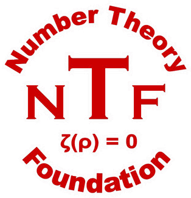

MacMillan Hall, Room 115, located at 167 Thayer Street, Providence.
The main entrance is through the Science Park entrance, on the north side of the building. Please note that all campus buildings are card swipe access only, so there will be someone at this entrance to let you in.
Check-in will be held in the lobby of MacMillan Hall on Monday, August 3rd before the first talk. Please arrive a bit early to check in and pick up your name tag. It is important that you keep this tag with you throughout the workshop.
| Time | Speaker | Title/Abstract |
|---|---|---|
| 9:30 AM–10:30 AM | Xinyi Yuan |
On Vojta’s Proof of the Mordell ConjectureThe Mordell conjecture was originally proved by Faltings in 1983, and a second proof was given by Vojta in 1989. In this talk, I will describe Vojta’s proof with a simplification by using my arithmetic Siu inequality. |
| 11:00 AM–12:00 PM | Isabel Vogt |
Unlikely Ramification of Algebraic Points on CurvesA slogan of arithmetic geometry is that “geometry controls arithmetic”: as the geometric complexity increases, the arithmetic also becomes more complicated. In this talk, I will discuss results in this direction that show that there are many number fields that cannot appear as the residue field of points on a fixed curve of genus at least 2. This is joint work with Bianca Viray. |
| 2:00 PM–3:00 PM | Jackson Morrow | A non-Archimedean Ax–Lindemann theorem for certain p-adically uniformized Shimura varietiesThe Ax–Lindemann conjecture is a functional transcendence statement in arithmetic geometry concerning the uniformization map of an arithmetic variety. Klingler–Ullmo–Yafaev proved this conjecture for the complex analytification of a Shimura variety. I will present a non-Archimedean analogue of this result for certain p-adically uniformized Shimura varieties, in particular quaternionic Shimura varieties and a class of PEL-type unitary Shimura varieties treated by Rapoport–Zink. Our proof has two main ingredients. First, we prove that the complex and p-adic uniformization maps for these Shimura varieties satisfy the same system of differential equations—an extension of a theorem of André from Shimura curves to this broader setting. Second, we use differential algebra and model theory to show that the complex and p-adic Ax–Lindemann statements are equivalent in this setting. This is joint work with Marc-Hubert Nicole and Giovanni Rosso. |
| 3:30 PM–4:30 PM | Alex Betts | Geometry and arithmetic of torsors under tori over abelian varietiesThe Abel—Jacobi embedding of a curve inside its Jacobian is a powerful tool for studying rational points, per Chabauty's method. In this talk, I will introduce a "non-abelian lift" of the Abel—Jacobi embedding which embeds a curve inside a torus-torsor over the Jacobian. I will discuss several aspects of these torus-torsors: a "hidden" extra algebraic structure which controls Neron—Tate heights (due to Breen), the relationship to quadratic Chabauty (due to Edixhoven and Lido), and how these ideas lead one to formulate and prove a Manin—Mumford-style unlikely intersection result regarding these torsors. As a corollary, we obtain a strengthening of a result of Bianchi on quadratic Chabauty loci for once-punctured elliptic curves of rank 0. |
| Time | Speaker | Title/Abstract |
|---|---|---|
| 9:30 AM–10:30 AM | Jit Wu Yap |
Uniform boundedness of torsion points for abelian varieties over function fieldsLet K be the function field of a curve B over C and A/K an abelian variety with trivial trace. The uniform boundedness conjecture predicts that the number of torsion points in A(K) is bounded solely in terms of dim A and K. In this talk, I will present a proof of this conjecture and also discuss some related questions. This is joint work with Nicole Looper. |
| 11:00 AM–12:00 PM | Riccardo Pengo |
Explicit bounds and algorithms to find torsion pointsA celebrated conjecture by Manin and Mumford, now a theorem, predicted the distribution of torsion points in subvarieties of (abelian) group varieties. Our talk will be focused on the explicit aspects surrounding these conjectures, with the objective of finding the aforementioned torsion points in explicit infinite families of varieties. This talk will be based on joint work in progress with Evelina Viada. |
| 2:00 PM–3:00 PM | Boya Wen |
Local systems over graphs and CM cycles over Shimura CurvesA Shimura Curve parametrizes principally polarized abelian surfaces with quaternion multiplication by a quaternion algebra B. At a prime where B ramifies, the Shimura curve reduces to a split degenerate curve whose dual graph is a finite regular graph of degree p + 1. In this talk, we will introduce local systems of spheres and inner product spaces on such graphs, as well as harmonic analysis on them. We will also connect these constructions to arithmetic intersections of CM cycles in a universal abelian surface above the Shimura curve. |
| 3:30 PM–4:15 PM | Lightning Talks | Hanson Hao, Zhelun Chen, Xinyu Fang, Dan Townsend, Xiao Zhong, Yuta Nakayama, Soheil Memarian |
| 4:30 PM–5:30 PM | Shouwu Zhang |
Adelic Line Bundles: From Canonical Heights to Arithmetic PositivityCanonical heights play a fundamental role in arithmetic geometry, from the Mordell–Weil theorem to the Birch–Swinnerton-Dyer conjecture. In 1995, I introduced the notion of adelic line bundles, providing a geometric interpretation of canonical heights as degrees of metrized line bundles over all places of a number field. This viewpoint unifies Archimedean and non-Archimedean geometry and brings analytic methods into arithmetic geometry. In this lecture, I will explain how adelic line bundles lead naturally to adelic intersection theory, Monge–Ampère measures, and the equidistribution of small points, with applications to the Bogomolov conjecture and arithmetic dynamics. I will then describe recent joint work with Xinyi Yuan that extends the theory to quasi-projective varieties, thereby making it possible to construct canonical adelic metrics on moduli spaces. These developments reveal new positivity phenomena in arithmetic geometry and provide a conceptual framework for studying heights of algebraic cycles and related arithmetic questions. |
| Time | Speaker | Title/Abstract |
|---|---|---|
| 9:00 AM–10:00 AM | Myrto Mavraki |
Special Subvarieties in Families of endomorphisms of (P¹)ⁿLet Φ = (f₁, …, fₙ) be an algebraic family of coordinatewise rational maps on (P¹)ⁿ, and let X be a family of subvarieties. When is X dynamically special—for instance, preperiodic—for a Zariski-dense set of parameters? Inspired by Pink’s conjectures in arithmetic geometry and recent work of Gao–Habegger, Yuan and Zhang, I will discuss a geometric answer to this question. I will explain its connections with bifurcation theory in complex dynamics and the positivity of canonical adelic line bundles, and indicate applications to uniformity questions for preperiodic points and invariant subvarieties. This is joint work with Laura DeMarco. |
| 10:30 AM–11:30 AM | Junyi Xie |
Abelian points in backward orbitsLet K be a number field and let f be a polarized self-map of a normal projective variety X. For a point x in X, consider the field generated by all iterated preimages of x under f. I will explain when this field extension is virtually abelian. The answer is exactly the exceptional case: f must be an exceptional map with complex multiplication, and x must be preperiodic. This proves a conjecture of Andrews and Petsche and extends it to higher dimensions. |
| 12:00 PM–1:00 PM | Gabriel Dill |
Intersecting a curve with multiples of another curveI will present joint work in progress with Fabrizio Barroero and Lars Kühne on the abelian analogue of a question of Levin, which has appeared in Zannier’s book on unlikely intersections more than a decade ago. Namely, we study the locus of points that lie on a given curve and have an integer multiple lying on another given curve. |
| Time | Speaker | Title/Abstract |
|---|---|---|
| 9:30 AM–10:30 AM | José Burgos Gil |
The essential minimum of height functions on the projective lineThe essential minimum of a height function is the minimal value that the height function can attain at generic points. There are methods to compute upper and lower bounds for the essential minimum. In a joint work with Binggang Qu, Ricardo Menares, and Martin Sombra, we prove using linear programming techniques that the difference between the upper and lower bounds can be made arbitrarily small. Therefore, one can devise a theoretical algorithm to compute the essential minimum with arbitrary precision and thus the essential minimum is a “computable” real number. This result has applications in several classical problems like the integral Chebyshev constant of the unit interval, the spectrums of the Zhang-Zagier and the Faltings heights and the asymptotic behaviour of the length of the shortest vector in the lattice associated with the Grassmannian Gr(2, 4). |
| 11:00 AM–12:00 PM | Klaus Künnemann |
A tropical formula for non-archimedean local heightsWe report on joint work with José Burgos and Walter Gubler. Let X be a smooth projective variety over a non-archimedean field. Using tropicalization, one can introduce real-valued forms and currents on the non-archimedean analytification of X. We discuss how these can be used to compute non-archimedean local heights. |
| 2:00 PM–3:00 PM | Alice Lin |
Finiteness of heights in isogeny classes of motivesUsing integral p-adic Hodge theory, Kato and Koshikawa define a generalization of the Faltings height of an abelian variety to motives defined over a number field. Assuming the adelic Mumford-Tate conjecture, we prove a finiteness property for heights in the isogeny class of a motive, where the isogenous motives are not required to be defined over the same number field. This expands on a result of Kisin and Mocz for the Faltings height in isogeny classes of abelian varieties. |
| 3:30 PM–4:15 PM | Lightning Talks | Ying Wang, Wenbin Luo, Michal Szachniewicz, Zheng Xiao, Mithun Padinhare, Yu Fu |
| 4:30 PM–5:30 PM | Joseph H. Silverman |
Positivity Properties of Fourier Expansions of Local Heights on Abelian VarietiesLet K be a complete local field, and let A/K be an abelian variety of dimension g. If A has good reduction, then the intersection pairing P · D on the Néron model of A gives a local canonical height A(K) ∖ |D| → R associated to the ample effective divisor D. If A has split multiplicative reduction, there is a Bernoulli correction term that takes on both positive and negative values. In the case g = 1, this term is given by the periodic 2nd Bernoulli polynomial B₂(T) = T² − T + 1/6 whose classical Fourier expansion has non-negative coefficients. For g = 2, Nicole Looper and I investigated the analogous 2-variable periodic Bernoulli polynomial B₂(X, Y). We gave explicit formulas for the Fourier expansion of B₂(X, Y) and showed how weighted averages could be used to eliminate the negative Fourier coefficients. In this talk I will describe the g = 1 and g = 2 cases, briefly mention some motivating applications, and raise some questions in higher dimensions. |
| 5:40 PM | Reception | Kasper Multipurpose Room in Faunce House, at 75 Waterman Street |
| Time | Speaker | Title/Abstract |
|---|---|---|
| 9:00 AM–10:00 AM | Philipp Habegger |
Specializing Linear Recurrence Sequences at Roots of UnityThe Skolem-Mahler-Lech Theorem characterizes the vanishing members of a linear recurrence sequence. Recently, Bacik gave an effective proof of this classical theorem for four term linear recurrence sequences in the number field case. For orders greater than four, no effective proof is known. In other words, given a general linear recurrence sequence, we know of no algorithm that is guaranteed to determine the indices at which the sequence vanishes. We consider linear recurrence sequences of rational functions and study when sequence members vanish at a root of unity. Bilu-Luca and Ostafe-Shparlinski proved finiteness results for linear recurrence sequences of order two. I will report on a new finiteness result for linear recurrence sequences of order three. We require linear forms in logarithms combined with the Pila-Zannier strategy as well as the function field abc Conjecture. This is joint work in progress with Alina Ostafe and David Masser. |
| 10:30 AM–11:30 AM | Yunqing Tang |
The arithmetic of power series and applications to irrationalityWe will first briefly discuss our approach to prove irrationality of certain periods such as certain product of two log values. The key ingredient is an arithmetic holonomy theorem built upon earlier work by André, Bost, Charles (and others) on arithmetic algebraization theorems via Arakelov theory. We will then discuss our result on irrationality measures and a proof of transcendence of π in our framework. This is joint work with Frank Calegari and Vesselin Dimitrov. |
| 12:00 PM–1:00 PM | Aaron Levin |
Some applications of Diophantine approximation to integral points and unlikely intersectionsWe discuss recent results in Diophantine approximation, with a focus on heights attached to closed subschemes of higher codimension and greatest common divisor type inequalities. We then give some applications to integral points on surfaces, and discuss relations between GCD inequalities and a new unlikely intersection conjecture. This is joint work with Zheng Xiao and Keping Huang. |
|
 |